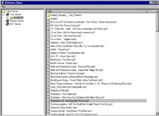

The client is still being developed and is not currently available.
Normally, edna interacts with users through web pages. However, edna also provides the ability for a custom GUI client to access the songs and playlists from the edna server, while interacting with the user in a more natural fashion.
Here is a screenshot of the edna client:

Creating a specialized client has provides the user with benefits over the use of a web browser. Some of the enhancements include:
The client is built with Python and the wxPython cross platform GUI toolkit. Instructions on adding your own features are here, and you can download it here.
The client code can be found in edna_gui.py. Most of the code was gui code was done in wxPython. The nice thing is that you don't need to have python installed on your system to edit the code. If you are running the edna.exe and have the python15.dll on your system, you modify any of the files within the app directory.
The client code is not available at this time. Please check back in the future.
Edit the edna_gui.conf file with your setup. You
need to tell the client: